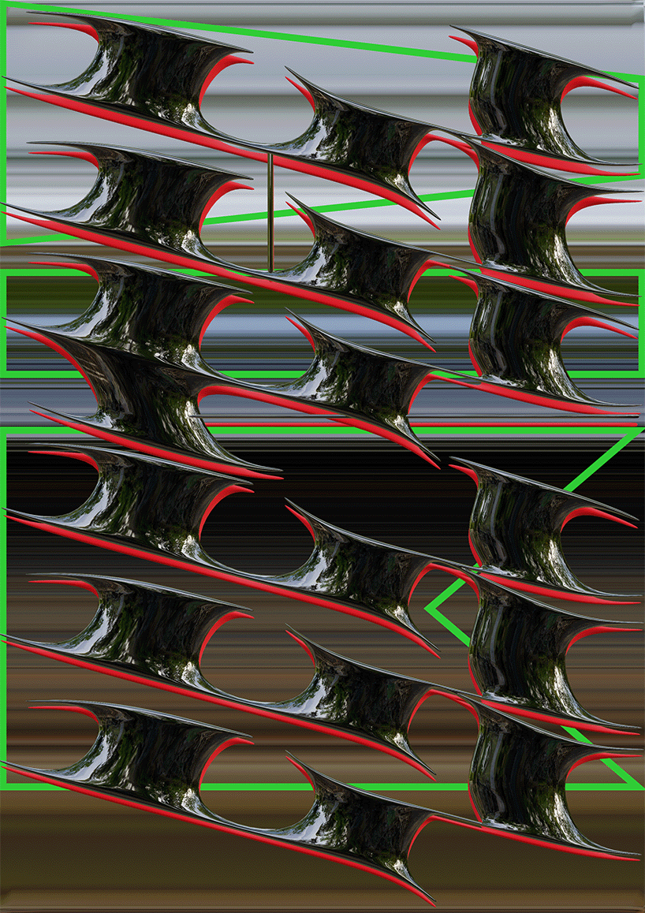

Mels Alings
Contact
Projects
Graphic design student at the University of the Arts Utrecht (HKU). Experimenting with multiple digital tools as well as expressive typography. Playing with shape, type, composition and motion.
